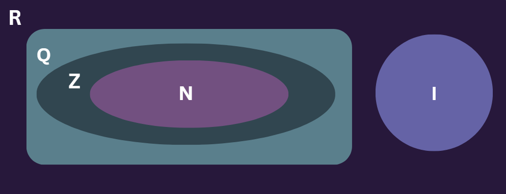

Conjuntos Numéricos
Conjuntos Numéricos
Os conjuntos numéricos são fundamentais na matemática e são divididos em várias categorias:
- Números Naturais (N): Usados para contar (0, 1, 2, 3...).
- Números Inteiros (Z): Incluem os naturais e os negativos (..., -3, -2, -1, 0, 1, 2...).
- Números Racionais (Q): Podem ser escritos como fração (exemplo: \( \frac{1}{2} = 0,5 \)). Incluem números inteiros, frações e dízimas periódicas.
- Números Irracionais: Não podem ser escritos como fração e possuem infinitas casas decimais sem repetição (exemplo: \( \pi = 3,141592... \)).
- Números Reais (R): Englobam todos os conjuntos anteriores e podem ser representados na reta numérica.

Símbolos
| Símbolo |
Descrição |
Exemplo |
| ∈ ("Pertence a") |
Indica que um elemento faz parte de um conjunto. |
3 ∈ N (3 pertence ao conjunto dos naturais). |
| ∉ ("Não pertence a") |
Indica que um elemento não está no conjunto. |
–1 ∉ N (-1 não pertence aos naturais). |
| ⊆ ("Está contido em") |
Um conjunto é subconjunto de outro. |
N ⊆ Z (os naturais estão contidos nos inteiros). |
| ⊂ ("Subconjunto próprio") |
Um conjunto está dentro de outro, mas não é igual. |
N ⊂ Q (naturais fazem parte dos racionais, mas não são todos). |
| ⊈ ("Não está contido") |
Um conjunto não é subconjunto de outro. |
Q ⊈ N (racionais não estão contidos nos naturais). |
| ∪ ("União") |
Junta os elementos de dois conjuntos. |
A ∪ B (todos os elementos de A e B). |
| ∩ ("Interseção") |
Apenas os elementos em comum entre os conjuntos. |
A ∩ B (elementos que pertencem a A e B ao mesmo tempo). |
| ∅ ("Conjunto vazio") |
Um conjunto sem elementos. |
{x ∈ X | x < 0} = ∅ (não há naturais negativos). |
| - ("Diferença") |
Elementos que estão em um conjunto, mas não no outro. |
A - B (elementos de A que não estão em B). |
Intervalos
| Tipo de Intervalo |
Notação de Intervalo |
Notação de Conjunto |
Descrição |
| Fechado em a e b |
\([a, b]\) |
\({x ∈ R | a ≤ x ≤ b}\) |
Inclui os extremos a e b. |
| Aberto em a e b |
\(]a, b[\) |
\({x ∈ R | a < x < b}\) |
Exclui os extremos a e b. |
| Fechado em a e aberto em b |
\([a, b[\) |
\({x ∈ R | a ≤ x < b}\) |
Inclui a e exclui b. |
| Aberto em a e fechado em b |
\(]a, b]\) |
\({x ∈ R | a < x ≤ b}\) |
Exclui a e inclui b. |
| Aberto em a e sem limite superior |
\(]a, +∞[\) |
\({x ∈ R | x > a}\) |
Todos os números reais maiores que a. |
| Aberto em a e sem limite inferior |
\(]-∞, a[\) |
{x ∈ R | x < a} |
Todos os números reais menores que a. |
| Fechado em a e sem limite superior |
\([a, +∞[\) |
\({x ∈ R | x ≥ a}\) |
Todos os números reais maiores ou iguais a a. |
| Fechado em a e sem limite inferior |
\(]-∞, a]\) |
\({x ∈ R | x ≤ a}\) |
Todos os números reais menores ou iguais a a. |
| Intervalo de todos os números reais |
\(]-∞, +∞[\) |
\(R\) |
Todos os números reais. |